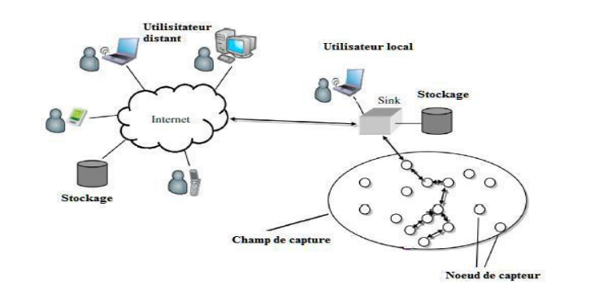

Définition de l'agriculture intelligente :
Pour les implémentations M2M (Machine to Machine), le système informatique regroupe, collecte, analyse et présente les données en une façon d’initier une réponse appropriée par l'utilisateur final aux informations reçues.
Plusieurs paramètres sont ajoutés aux données pour une décision plus précise par exemple : les conditions météorologiques et les règles appliqués dans le pays.
L'agriculture intelligente est une révolution de l'agriculture classique qui implique la réorientation des systèmes agricoles afin de soutenir efficacement le développement 3 alimentaire. Le principal objectif de l’agriculture intelligente est d’accroître la productivité et les revenus agricoles L’agriculture intelligente implique l’utilisation des technologies de la communication de l’information (TIC) et en particulier de l’Internet des objets (IoT) et de l’analyse de données volumineuses (Big data) associées pour faire face à ces défis via la surveillance électronique des cultures, ainsi que pour l’environnement, le sol, la fertilisation et conditions d'irrigation. Ces données de surveillance peuvent ensuite être analysées pour identifier les cultures qui répondent le mieux aux objectifs de productivité de toute exploitation agricole dans le monde .
Sont considérés La FAO a mis en œuvre le projet «Agriculture intelligente face au climat: favoriser les synergies en matière d’atténuation, d’adaptation et de sécurité alimentaire» avec des pays partenaires. Le but de ce projet est de renforcer les capacités techniques, politiques et d’investissement de trois pays partenaires – le Malawi, le Vietnam et la Zambie – pour déterminer une augmentation durable de la productivité agricole et des revenus, renforcer la résilience des systèmes agricoles et alimentaires devant s’adapter aux modifications du climat, et offrir la possibilité de réduire et d’éliminer les GES en vue d’atteindre les objectifs nationaux de sécurité alimentaire et de développement. Le projet a été élaboré et sous-tendu du point de vue technique par le Programme Économie et politiques novatrices pour une agriculture intelligente face au climat (EPIC) grâce à l’appui de la Commission européenne. Le projet a développé une méthode qui unit différents types de données pour créer une base de résultats sur les pratiques d’AIFC, comprenant également les incitations/obstacles à leur adoption, les synergies en matière d’atténuationadaptation-sécurité alimentaire, et les compromis sur les différentes pratiques possibles (basés sur l’identification des avantages apportés par la sécurité alimentaire et l’adaptation, des indicateurs du changement climatique, de la capacité d’atténuation, et des possibilités d’investissement à moindre coût). En Zambie, ces données combinées ont montré que quelques exploitants ont des problèmes à adopter les pratiques d’agriculture de conservation (AC), qui devraient pourtant apporter des avantages en matière de productivité, d’adaptation et d’atténuation. Dans certaines exploitations, les résidus des cultures sont utilisés comme aliments pour animaux plutôt que comme couverture végétale et les ménages trop pauvres ne peuvent pas attendre que les avantages se concrétisent après plusieurs saisons. L’AC, cependant, semble être utilisée comme mesure d’adaptation dans les zones à la variabilité climatique prononcée. Les résultats indiquent également les points d’appui permettant aux politiques agricoles d’améliorer la sécurité alimentaire dans le contexte du changement climatique et aux services de vulgarisation de mieux travailler. Le projet a également entrepris de cartographier les instruments de la politique agricole et du changement climatique, les parties prenantes/institutions, la formulation des politiques, et les processus de mise en œuvre en vue d’harmoniser davantage les politiques et de mieux coordonner les arrangements institutionnels.
Cela devrait, par ailleurs, faciliter les dialogues politiques entre les différents ministères s’occupant d’agriculture et d’environnement pour harmoniser le projet des politiques nationales sur l’agriculture et les changements climatiques, ce qui a déjà porté à l’ajustement des ébauches. En outre, le projet a coordonné des ateliers participatifs sur l’élaboration de scénarios pour un vaste groupe de parties prenantes afin d’examiner les incertitudes à venir, les difficultés contextuelles, les vulnérabilités institutionnelles, les possibilités politiques et la constitution de réseaux. Les pays partenaires ont bénéficié d’activités de renforcement des capacités incluant : • L’appui à des étudiants et doctorants en sciences de grandes universités pour renforcer les liens entre la recherche et la prise de décisions en matière de politiques. • Un manuel de formation en AIFC destiné à former les vulgarisateurs. • Un soutien à la participation des fonctionnaires du Ministère de l’agriculture aux négociations de la CCNUCC pour leur faire mieux prendre conscience des problèmes liés au changement climatique et augmenter, en même temps, les effectifs et les compétences des délégations nationales participant aux sessions de la CCNUCC. La base de résultats et les travaux de synthèse mis au point par le projet seront utilisés pour formuler des propositions d’investissement en vue d’appuyer la mise en œuvre de l’AIFC, pour laquelle seront également mobilisés les financements liés au climat. En Afrique, ces propositions seront intégrées aux plans d’investissement du Programme détaillé pour le développement de l’agriculture africaine (PDDAA). Des fonds sont actuellement recherchés pour une deuxième phase du projet, qui concernerait sa mise en oeuvre et sa généralisation dans les trois pays partenaires, l’élargissement de la préparation à d’autres pays, et l’élaboration d’un nouvel outil d’analyse